第一段 · 大力兴建组屋
建国初期，多数国人的住房比较简陋，生活条件也比较落后。1960年，政府成立了建屋发展局，开辟土地，兴建了大量的组屋。四年后，政府实施“居者有其屋”计划，让国人能够以优惠的价格买到属于自己的房子。
建国初期，多数国人的住房比较简陋，生活条件也比较落后。1960年，政府成立了建屋发展局，开辟土地，兴建了大量的组屋。四年后，政府实施“居者有其屋”计划，让国人能够以优惠的价格买到属于自己的房子。
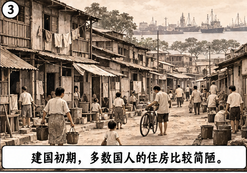
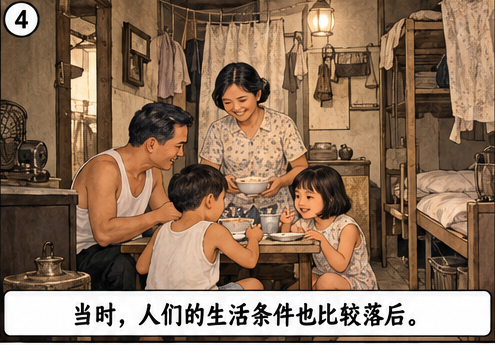
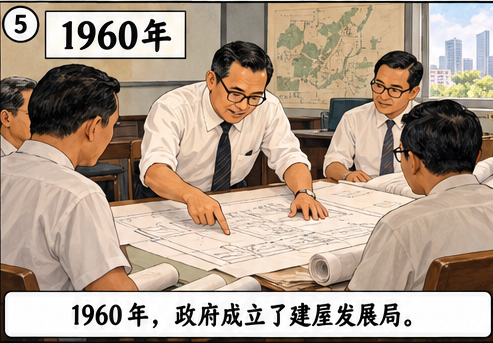
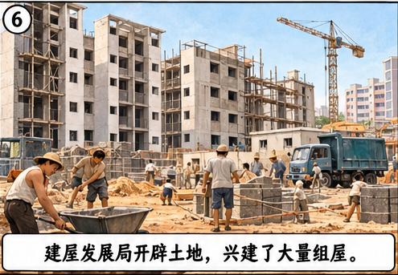
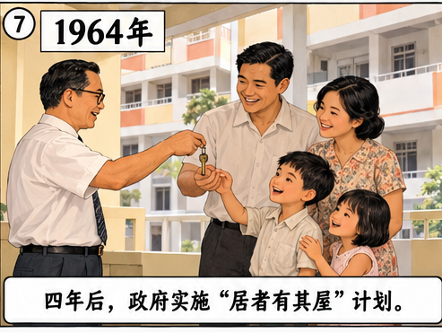
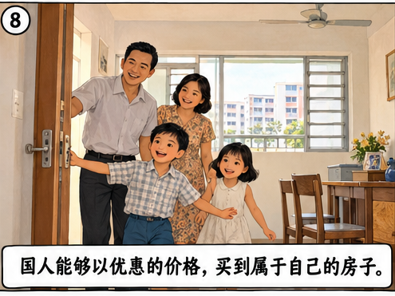
为了满足人民的生活所需，增强社区居民的凝聚力，政府在兴建组屋时也重视市镇的规划。市镇里一般都有邻里中心、游乐场、图书馆、公园、小贩中心、宗教场所、市镇理事会、民众俱乐部、综合诊疗所等。
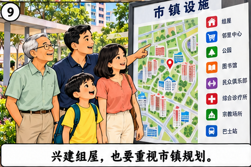
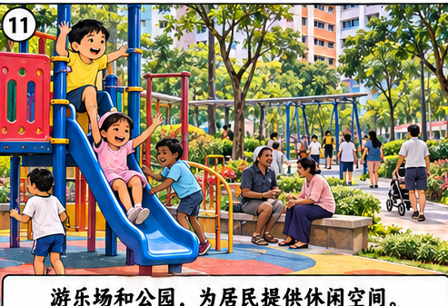
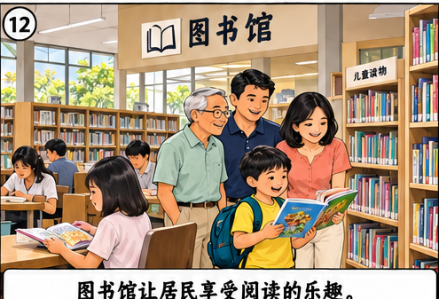
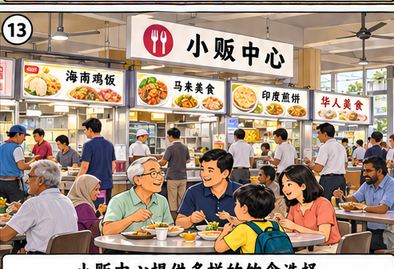
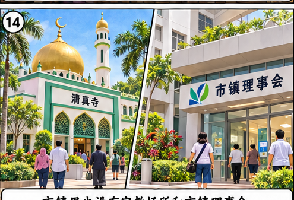
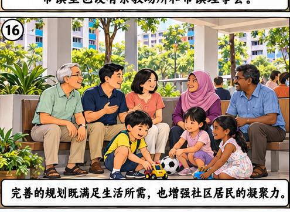
随着新加坡经济的蓬勃发展，国人的生活越来越富裕，生活水平也提高了。为了与时俱进，建屋发展局给组屋的设计注入更多活力，推出了许多设计新颖、造型美观的新组屋。
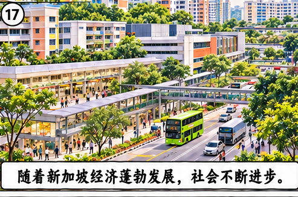
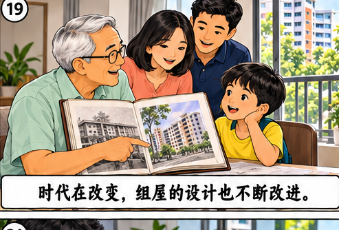
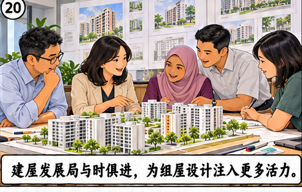
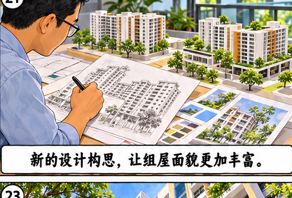
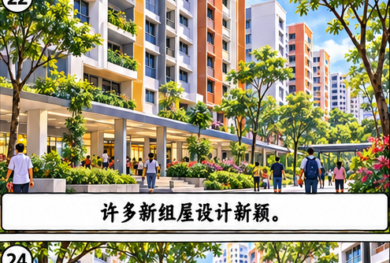
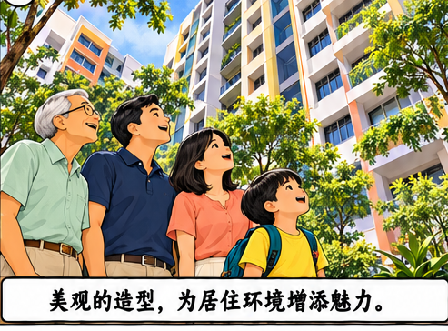
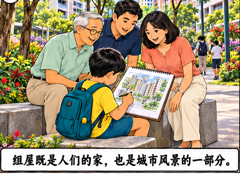
时代不断变迁，建屋发展局在设计组屋时越来越关注环保和人口老化等问题。组屋区里为居民提供了更多的交流空间，环保和无障碍设施也越来越完善。
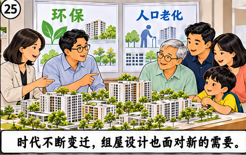
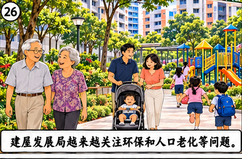
如今，新加坡的组屋驰名海内外，市镇规划和组屋设计也屡次得奖，获得许多荣誉。组屋已是新加坡的重要标志之一，也成为新加坡一道美丽的风景线。
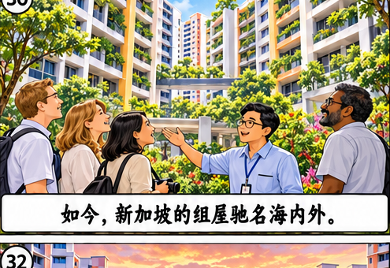
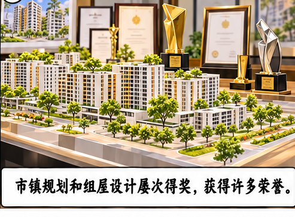